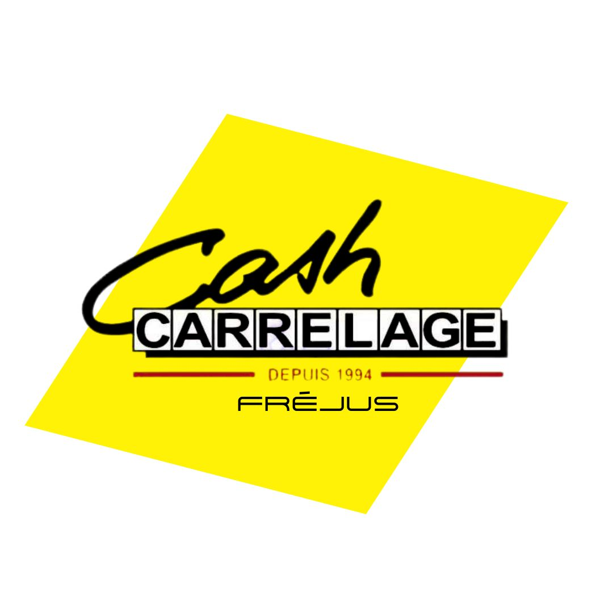

Z Q S D ou les flèches pour marcher Clic maintenu pour regarder autour · Maj pour courir

Chargement du moteur 3D…
Cash Carrelage Fréjus
Cette visite n'est plus disponible
Le lien est incomplet ou a été abîmé en chemin. Les liens de visite sont
longs : vérifiez qu'il a bien été copié en entier, ou demandez-nous-en
un nouveau.